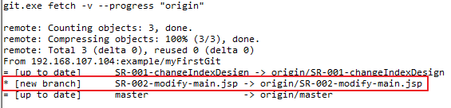

Merge, Merge Request (Pull Request)
|
작업
|
설명
|
|
Merge
|
병합 > 다른 Branch의 내용을 특정 (작업 중인) Branch로 병합한다. ( 최신 버전 > 적용 ) |
|
Merge
Request
(Pull Request) |
병합 요청 > 작업 중인 특정 Branch 에서 서버의 메인(=기본, 일반적으로 master) 혹은 특정 Branch로 병합하고자 하는 것을 요청하는 작업 (이 작업은 매우 중요하므로 특정 권한이 있는 사용자가 할 수 있도록 관리되어야 합니다.) |
- Merge Request (Pull Request) 를 하는 이유?
- Git(=GitLab) 을 사용하면서 가장 많이 마주치는 것 PR, Pull Request 입니다.
- 이 기능은 Git 에서 가장 자랑할 만한 기능인데요, 우리가 어떠한 작업을 한 뒤에는 일반적으로 작업결과를 공유하고 테스트 한 뒤 서버에 배포하여 확인하는 과정을 거치게 됩니다. (개발 > 공유 (테스트) > 배포)
- 이러한 과정에서 테스트 시에 문제가 발생하거나 혹은 배포 시 문제가 발생하면 다시 개발하는 과정으로 돌아가게 됩니다. 그리고 다시 반복하는 것이죠.
- Merge Request, Pull Request의 가장 큰 목적은 "코드리뷰"입니다. 즉, 내가 작업한 작업내용을 다수의 사용자(혹은 관리자)들과 공유하고 문제점을 미리 파악하는 것입니다. 이로 인해 "최종 배포 전까지" 보다 많은 수정과 개선을 통해 오류를 미리 제어할 수 있게 됩니다.
- Merge: 나의 Branch(=작업 branch)에 다른 Branch 의 내용을 병합한다.
- 아주 간단한 과정을 통해 다른 branch에서 작업한 내용을 나의 branch에 적용하는 방법을 안내합니다.
- 예시 상황 미리보기
- "hongRaeCho" 라는 사용자가 "SR-002-modify-main.jsp" branch 를 생성하여 "요구사항 작업"을 진행하였습니다.
- "i_am_a_student"인 현재 사용자는 "hongRaeCho"라는 사용자가 작업한 branch를 적용하길 원합니다.
- 따라하기
- 서버에 새로운 정보가 입력되었습니다. ("hongRaeCho"라는 사용자가 새로운 branch를 만들고 그 곳에서 작업을 진행했습니다.)
- 새로운 서버의 정보를 fetch 받습니다.

- fetch 후 아래와 같이 "merge…"를 실행합니다.

 여기서 잠깐 (fetch 하지 않았을 때 만나는 모습은 어떤 모습일까?)
여기서 잠깐 (fetch 하지 않았을 때 만나는 모습은 어떤 모습일까?)
- 서버에 변경된 정보를 fetch 받지 않았기 때문에 "hongRaeCho"의 작업 branch는 확인할 수 없습니다.
- 받고자 하는 branch 를 선택합니다. 우리는 예시로 "hongRaeCho"의 작업 branch(=remotes/origin/SR-002-modify-main.jsp)를 merge 하기로 했었으니, 위의 이미지처럼 선택합니다.
- Merge 결과 확인

- 성공적으로 merge 된 경우 없던 파일 (=즉, "hongRaeCho"가 작업했던 branch의 작업파일)이 보이게 됩니다.
- Merge Request: 나의 작업결과를 메인(혹은 기본 =master) branch로 병합하기
- 메인 Branch 로 병합한다는 것은 아래의 의미를 가집니다.
-
목적에 따라의미메인 branch의 이름개발 중이라면
개발 서버(WAS)에 최종 소스로서 반영하겠다는 의미 development 테스트 중이라면테스트 서버(WAS)에 최종 소스로서 반영하겠다는 의미 test 운영 중이라면운영 서버(WAS)에 최종 소스로서 반영하겠다는 의미 master (또는 production)
- 각 운용 중인 branch 들의 목적에 따라 그 의미는 달라지며, Merge Request 또한 목적에 따라 대상 메인 branch가 달라집니다.
- 이 매뉴얼에서는 그 대상을 master로 합니다.
- Merge Request
- GitLab 웹 페이지에 접속하여 "Merge Request"를 선택합니다.


|
1
|
Merge Request 할 대상 branch 를 선택합니다. |
|
2
|
Merge 될 대상 branch 를 선택합니다. |
- 각 branch를 선택 후 아래의 "Compare branches and continue"를 선택합니다.
- New Merge Request 상세 > 아래 이미지를 참고하세요.


- Merge Request Review
- Merge Request 에 대한 요청이 들어오면 요청자와 리뷰어가 함께 대화/소통할 수 있습니다.

|
1
|
Merge Request 요청 정보의 제목과 본문 내용 |
|
2
|
요청 Branch와 대상 Branch |
|
3
|
최종 Merge 할 수 있는 기능 버튼 |
|
4
|
토론할 수 있도록 제공되는 영역 |
- 최종 Merge 하기
- 지금까지 어떤 일이 있었을까? (요약 그래프)

- 네, 많은 일이 있었습니다. (위의 내용은 gitLab > project Home > Repository > Graph 에서 확인할 수 있습니다.)
- Merge 후 branches 모습

- 이전과 다르게 최신 버전으로 merge 되었음을 확인할 수 있습니다.
- 그리고 master branch에도 적용된 모습을 확인할 수 있습니다.(아래)